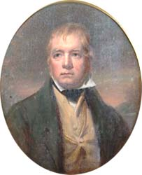
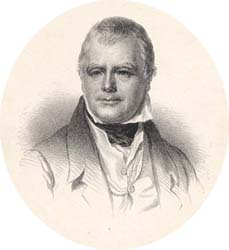
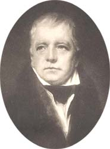

|
|
Home | Corson
Collection | Biography | Works | Image
Collection | Recent
Publications | Correspondence | Forthcoming
Events | Links | E-texts | Contact
Sir Henry Raeburn's 1823 Portraits of Sir
Walter Scott
In 1819, Charles Montagu-Scott, 4th Duke of Buccleuch, asked Scott
to sit to Raeburn for a portrait destined to hang in the library
of the Buccleuch family home of Bowhill. Scott replied:
Respecting the portrait I shall
be equally proud and happy to sit for it & hope it may
be executed in some degree worthy of the preferment to which
it is destined. But neither my late golden hue for I was
coverd with jaundice nor my present silver complection looking
much more like a spectre than a man will present any idea
of my quondam beef-eating physiognomy. I must wait till the
age of brass the true juridical bronze of my profession shall
again appear on my frontal. I hesitate a little about Raeburn
unless your Grace is quite determined. He has very much to
do works just now chiefly for cash poor fellow as he can
have but a few years to make money and has twice made a very
chowderheaded [i.e. clumsy- or thick-headed] person
of me. I should like much (always with your approbation)
to try [Sir William] Allan
who is a man of real genius and has made one or two glorious
portraits though his predilection is to the historical branch
of the art. (15 April 1819, Letters,
V, 349)
Scott's reservations relate to the stolid appearance that he believed
Raeburn had given him in his portraits of 1808 and 1809.
His letter, however, did not reach the Duke who died on 20 April
1819. In 1823, the Duke's brother Lord Montagu of Boughton asked
Scott to fulfil the engagement. Scott undertook to make arrangements
with Raeburn but, before he could do so, was himself contacted
by Raeburn who wished to paint the writer for his private gallery
of friends and associates. It was agreed that Scott would sit for
two portraits simultaneously, one for Lord Montagu, the other for
Raeburn in exchange for a series of carvings from the ancient Mercat
Cross of Edinburgh then to be found in the painter's gothic rockery.
There is no evidence as to when the pictures were begun, but Maria
Edgeworth reported both to be in a relatively advanced stage on
12 June 1823 when she and her sisters visited Raeburn's studio.
Two hours after this visit Scott and Raeburn set out together for
the
annual meeting of the Blairadam Club (a society of antiquarians)
in Fife. Less than three weeks later, on 8 July, Raeburn was dead.
That same day Scott wrote to Benjamin Robert Haydon:
This has been a severe season
for the arts: about a fortnight since I had a very merry
party through Fifeshire, with our Chief Baron (Sergeant Shepherd)
and the Lord Chief Commissioner, and above all, Sir H. Raeburn,
our famous portrait painter. No one could seem more healthy
than he was, or more active, and of an athletic spare habit,
that seemed made for a very long life. But this morning I
have the melancholy news of his death after three days illness,
by which painting is deprived of a votary of genius, our
city of an ornament, and society of a most excellent and
most innocent member. (Letters, VIII, 32)
On 17 July Scott wrote to Lord Montagu:
Poor Sir Henry Reaburn [sic] is
no more- He was over in Fife with the Chief Commissioner
Chief Baron & myself on a pleasure party about three
weeks hence and I never saw a man in better health. But he
died of water in the head a hopeless disease which must have
been long in the constitution. When he came back from Fife
he said now I am better acquainted with your face than ever
I was (having been three or four days in company) I will
finish Lord Montagu's picture & my own for I had agreed
long since to sit to him on his own account and both pictures
were nearly finishd. I went accordingly and sate to him for
nearly three hours when he finishd his own head in a most
masterly manner and did a great deal to that designd to your
Lordship but chiefly to the drapery. I upbraided him in jest
with having taken best care of himself & he allowd he
had but agreed whenever the paint on your copy was dry I
should have a finishing sitting. All this being the case
I think your Lordship should have the finishd picture which
is really considerd as the best likeness which ever has been
made of so indifferent an original for your Lordship cannot
certainly be expected to take the unfinishd picture which
would require one long sitting to bring it to the same perfection.
In all respects they are quite the same only the dress is
different to show that both were originals. (Letters,
VIII, 45-46)
Scott subsequently wrote to the painter's son requesting that
Lord Montagu be offered the refusal of the more complete portrait
if it were to be sold (Letters, VIII, 62-64). The painter's
family, however, were determined to keep the portrait as one of
Raeburn's last and greatest works. In fact, Raeburn had worked
on the portrait commissioned by Montagu after the writer had last
seen it, and it was far nearer completion than Scott had feared.
Indeed, Scott was to judge Lord Montagu's version 'a better picture
(the subject considered) than any one but Lawrence could at present
produce' (letter to Lady Louisa Stuart, 4 April 1824, Letters,
VIII, 245).
|  |
The painting made for Raeburn's own gallery now
hangs in the Scottish
National Portrait Gallery. It is a half-length portrait
of Scott in full face. He is portrayed wearing a dark-green
coat, a buff waistcoat, and a gold chain. His collar is white
and neckcloth black. The background is a dark reddish colour.
Many copies of the picture were painted but, unlike Raeburn's 1808
portrait, relatively few engravings were made after the
original. Click on the thumbnail, left, to see a copy by John
Rattray, and on the thumbnail, right, to see a lithograph
by Schenck & MacFarlane. |
 |
The version painted for Lord Montagu presents Scott in different
clothes. His coat has a fur collar and his vest is of a light colour.
It is now own by Sir Peter Usher, Bt., Hawick. Four painted copies
have been made but no engravings. Click on the thumbnail below
to see a photogravure made in 1903.

Bibliography
- Caw, James L. The Scott Gallery:
A Series of One Hundred and Forty-Six Photogravures, Together
with Descriptive Letterpress (Edinburgh; London : T.C. & E.C.
Jack, 1903)
- Russell, Francis. Portraits
of Sir Walter Scott: A Study of Romantic Portraiture (London:
The Author, 1987)
- Scott, Walter, Sir. The Letters of
Sir Walter Scott, ed. H.J.C. Grierson (London: Constable,
1932-37)
Back to Index

Last updated: 22-Mar-2005
© Edinburgh University Library
|
|